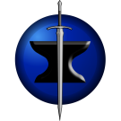
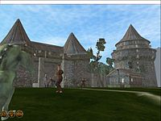

WorldForge
|  | |
| 
The Ember client
|
|
| Developer(s) | The Worldforge Team |
|---|---|
| Initial release | October 1998 |
| Platform | Cross-platform |
| Type | mmorpg |
| License | GPL |
| Website | www.worldforge.org |
{kind=link}
{kind=link}
The WorldForge project is producing an open source framework for massively multiplayer online role-playing games. The intent lies in creating a widely used development framework and set of libraries by motivating interested developers to improve on the original code.
History[edit]
The WorldForge Project began in October 1998, under the original name of "Altima." It was originally envisioned to be an "Alternative to Ultima Online" and was mentioned in an article on the Slashdot news website,[1] which became a major source of interested developers.
The original founder has since left the project along with most pre-Slashdot developers. Despite this, the community has become populous and able to sustain itself. A new governing system and selected coordinators has been established, fixing a new direction and a new goal. This community has decided to work on something much more significant than a "mere Ultima clone," and voted itself the new name "WorldForge". Avinash Gupta was the first leader of the project, followed by Bryce Harrington,[2] but more recently developers have chosen not to select a leader, and instead rely on consensus among a small group of determined core developers to decide the overall direction of the project.[3]
The WorldForge community has adopted the view that "massive" is unnecessary in a non-commercial game and has focused instead on "community" environments; estimating on the order of a few hundred players per game world, rather than thousands. Because most WorldForge servers are run by volunteers without strong bandwidth and hardware capacities this direction also has practical reasons.
Games[edit]
Several independent game projects have joined WorldForge, resulting in a lot of parallel development. The pig farming simulation Acorn is the only complete, if modest, game so far that has been released. Its significance lies in providing a proof of concept that the project can actually integrate and deliver software, artwork and media, as well as maintain a community capable of creativity and innovation. Development of Acorn ended in 2001 as the project has moved on to more ambitious new games.
The primary focus has shifted to a tactical building game called Mason, which focuses on competitive construction and invention of buildings, traps, and mechanisms. The intent lies in developing powerful yet generic "item invention" algorithms capable of bringing a new dimension of dynamic content to interactive gaming, creating, in effect, a working physics model that enables players to build and operate objects within the game that were not originally intended by the creators. Other games have been and will continue to be developed alongside Mason. This game is currently in alpha development and there are two available 3D clients. Mason includes all the functionality of Acorn.[4]
The project is also beginning to branch out into other forms of entertainment (e.g. comics, paper-and-pencil gaming), as it finds that its processes and multi-disciplinary nature are equally applicable there.
Clients[edit]
There are two currently functional 3D clients for Worldforge, Ember and Sear. Both clients are fully capable of normal operation such as moving around the world and performing actions such as starting fires, planting trees, making stakes etc. However, Ember has more advanced entity editing capabilities suitable for world building. Both clients are available for Linux and Windows, only Sear is currently available for Mac.
Servers[edit]
Cyphesis currently handles the running of the world. It is intended to become an AI only server and Indri is supposed to model Physics. However work on Indri is currently moving slowly by while Cyphesis is being actively developed.
References[edit]
- Jump up ^ Malda, Rob (1998-11-03). "The Altima Project". Slashdot. Retrieved 2007-06-02.
- Jump up ^ Sundseth, Douglas (2000-03-14). "The Worldforge Project: A Gamer's Perspective". LWN.net. Retrieved 2007-06-19.
- Jump up ^ Lehmann, Frauke (2004-09-22). "FLOSS developers as a social formation". First Monday. Retrieved 2007-06-20.
- Jump up ^ Wen, Howard (2005-05-14). "Brave New Worlds". Linux Magazine (USA). Retrieved 2007-06-02.
.svg){kind=link}